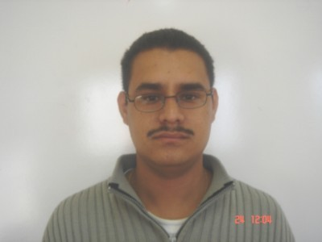

JOSÉ OCTAVIO DÍAZ ORTIZ

Resumen
Soy una persona seria y comprometida en su labor, dispuesto siempre a aprender.
Educación
- Primaria
- Nombre: Ejercito Nacional
- Fecha: 1986-1992
- Dirección: 20267, Jesús Yurem 316, Ojo de Agua, Aguascalientes, Ags.
- Titulo: Certificado
- Secundaria
- Nombre: Secundaria General Número 5 - Conveción de Aguascalientes
- Fecha: 1992-1995
- Dirección: Sinaloa S/N Mexico, 20265 Aguascalientes, Ags.
- Titulo: Certificado
- Preparatoria
- Nombre: Centro de Estudios Bachillerato 6/1 Aguascalientes CEBA
- Fecha: 1995-1997
- Dirección: Av. San Francisco de Los Viveros 101, Ojocaliente I, 20196 Aguascalientes, Ags.
- Titulo: Certificado Parcial
- Preparatoria
- Nombre: Preparatoria Abierta
- Fecha: 2009-2010
- Dirección: Calle 7 #101, Fracc. Primo Verdad C.P. 20267 Aguascalientes; México
- Titulo: Certificado
- Universidad
- Nombre: Universidad Abierta y A Distancia de México UNADM
- Fecha: 2011-2016
- Dirección: Av. Universidad 1200. Piso 1 Cuadrante 1-21. Col. Xoco, Alcaldía Benito Juárez, C.P. 03330. Ciudad de México.
- Titulo: Certificado, Título, Cédula Profesional
Experiencia laboral
- Maquilas y confecciones Sandy S.A de C.V
- Giro: Confección de ropa para dama y niña
- Fecha: 1998-2006
- Dirección: Av. Universidad 1200. Piso 1 Cuadrante 1-21. Col. Xoco, Alcaldía Benito Juárez, C.P. 03330. Ciudad de México.
- Actividades:
- Mantenimiento y Reparación de Equipo de Cómputo
- Auxiliar en el departamento de Lógistica
- Auxiliar en traducción de hojas de especificación
- Auxiliar administrativo
- Best and Active (Ramón Araiza Quiróz y Asociados)
- Giro: Escuela enseñanza de Idiomas
- Fecha: 2006-2019
- Dirección: Blvd. Guadalupano No. 1160.
- Empresa Cerrada
- Actividades:
- Mantenimiento y Reparación de Equipo de Cómputo
- Auxiliar de Instructor de inglés
- Auxiliar en traducción de hojas de especificación
- Auxiliar administrativo
- Distribuidora de Tubos y Conexiones
- Giro: Escuela enseñanza de Idiomas
- Fecha: 2006-2019
- Dirección: Blvd. Guadalupano No. 1160.
- Empresa Activa
- Actividades:
- Mantenimiento y Reparación de Equipo de Cómputo
- Auxiliar deptarmaneto de sistemas
- Auxiliar administrativo
- Programador Navisión, BC
Habilidades
- Programador: FULLSTACK ⭐⭐⭐⭐
- Programador: C++ ⭐⭐⭐
- Programador: Python ⭐⭐⭐⭐
- Programador: AL BUSINESS CENTRAL ⭐⭐⭐⭐
- Programador: JAVA ⭐⭐⭐
- Office: ⭐⭐⭐⭐
- Inglés: ⭐⭐⭐⭐
Habilidades
- Programador: FULLSTACK - UDEMY
- Programador: Python - UDEMY
- Inglés: - HUDSON COLLAGE - TORONTO CANADÁ
- Master Matemáticas - CONAMAT
- Data Sciencie - UDEMY
PASATIEMPOS
- Programación
- Matemáticas
- Videojuegos
- Pasar tiempo de calidad con mi esposa